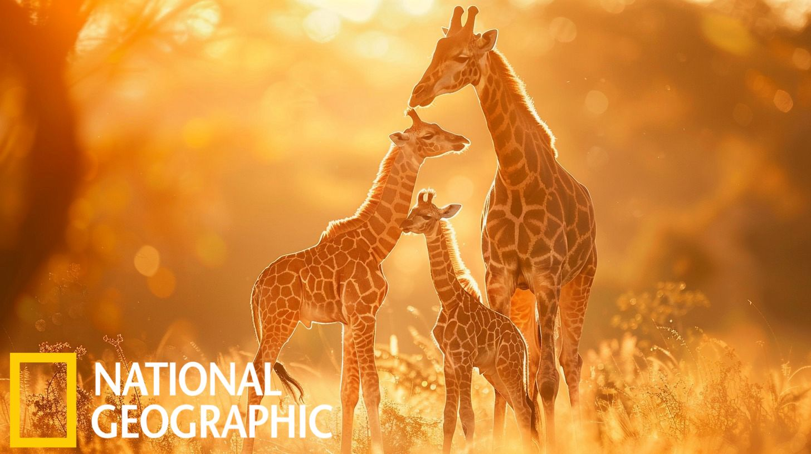

NAT GEO GRAND PRIZE AWARD
Serena Montgomery, a visionary photographer with an unyielding passion for capturing the essence of wildlife, secured the coveted NAT GEO GRAND PRIZEAWARD 2024 for her mesmerizing depiction of a family of three giraffes roaming the vast savannah of Africa's iconic safari landscape. Hailing from the heart of the African wilderness, Serena's lens skillfully immortalized the majestic grace and gentle camaraderie of these towering creatures against the backdrop of sweeping plains and golden sunsets. Her evocative portrayal not only celebrates the beauty of Africa's diverse fauna but also invites viewers to embrace the untamed spirit of the wild. Through her lens, Serena transports us on a captivating journey, where every frame tells a compelling story of resilience, harmony, and the unbreakable bond between nature's most magnificent inhabitants.